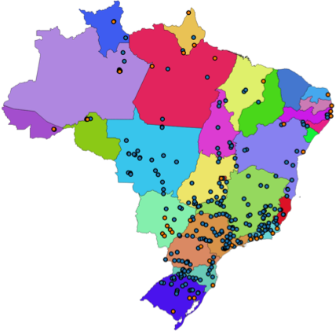
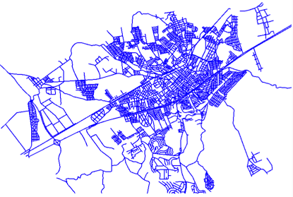

Introdução¶
A forma de modelar e representar os fenômenos geográficos no computador depende de sua percepção na forma de entidades discretas (objetos) ou campos contínuos.
Quando lidamos com fenômenos onde temos um valor definido para uma ou mais variáveis de observação em toda localização possível do espaço, estamos compreendendo tal fenômeno como um campo contínuo. Elevação, temperatura de superfície, risco de incêndio na vegetação, e radiância da superfície são exemplos de campos contínuos.
Quando percebemos o fenômeno em questão por objetos com fronteiras bem definidas e pertencentes a uma certa categoria, estamos compreendendo esse fenômeno como entidades discretas. Unidades de conservação estadual e federal, organização territorial, arruamento, trechos rodoviários, escolas, hospitais, linhas de transmissão de energia elétrica, são alguns exemplos de entidades discretas.
Para representar os dados dessas duas formas de conceitualização do espaço geográfico, em geral, utilizamos a representação matricial para fenômenos modelados como campos contínuos, e a representação vetorial para entidades discretas.
As entidades codificadas usando dados vetoriais são usualmente chamadas de feições (ou features). Nesse contexto, uma feição pode ser representada computacionalmente por diversas características, as quais chamamos de atributos da feição. Um atributo possui um nome, sendo associado a um determinado tipo de dado, como um número, uma sequência de caracteres (texto), ou uma data.
Além dos atributos alfanuméricos, uma feição é descrita por um ou mais atributos geométricos, associados a um tipo de dado geométrico. Um tipo de dado geométrico é capaz de representar elementos geométricos primitivos tais como pontos, linhas e polígonos ou coleções desses elementos.
A Tabela 1 apresenta alguns tipos de objetos geográficos representados por feições com representações geométricas de pontos (hidrelétricas e termoelétricas), linhas (logradouros) e polígonos (municípios brasileiros).
Hidrelétricas/Termoelétricas |
Logradouros |
Municípios |
|---|---|---|
 |
 |
|

{kind=link}
A Figura 17 ilustra o esquema de uma coleção de feições, onde podemos observar os atributos alfanuméricos e geométricos.
{kind=link}
As entidades codificados como dados matriciais, também chamadas de raster ou imagens, formam um plano subdividido em células de tamanho fixo, frequentemente chamadas de pixels. Para cada par de coordenada (x, y) nesse plano há um valor de intensidade, por vezes chamado nível de cinza, que indica o valor de alguma medida para aquele ponto.
A Figura 18 apresenta uma imagem do satélite CBERS-4 sensor WFI, um dado matricial em que cada célula, representa uma área de 64 metros da superfície terrestre e o valor de intensidade cada célula indica uma aproximação da cor refletida por essa superfície.

Figure 18 - Imagem do satélite CBERS-4 sensor WFI com 64 metros de resolução espacial, em composição colorida.¶
Ambos os formatos, vetorial e matricial, apresentam vantagens e desvantagens quando comparados entre sí. Dados matriciais por exemplo, apresentam uma estrutura bastante simples, uma grade regular com valores para cada célula. Entretanto, essa codificação assume que perdas de informação no espaço são aceitáveis, uma vez que cada célula é uma representação generalizada de uma área com variações no espaço real. Já os dados em formato vetorial apresentam a vantagem de utilizarem menor espaço de armazenamento, além de dependerem da resolução em que o dado foi gerado, o que possibilita utilizar o dado em diferentes escalas com menor distorção. Entretanto, dados vetoriais são mais complexos para manipular.